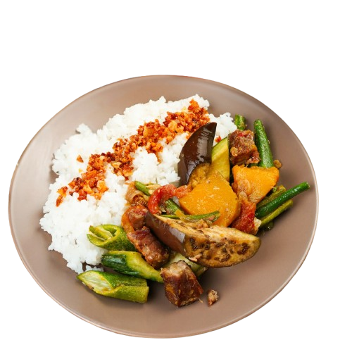
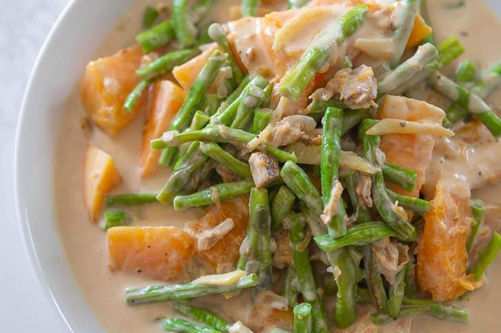
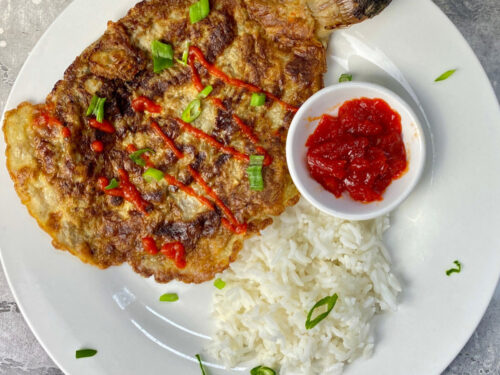

Tasty mix of veggies, meat, and sauce, perfect with rice or noodles.
Creamy mix of squash and coconut milk with savory flavors.
Fresh spring roll with heart of palm and savory filling.
Crispy spring roll filled with coconut and mung bean sprouts.
Eggplant omelette with a smoky, savory flavor.

a. 1 lb mung bean sprouts
b. 1 carrot
c. 4 cloves garlic
d. 1 onion
e. 1/4 cup dried shrimp
f. 8 ounces fried tofu
g. 1/8 teaspoon ground black pepper
h. 2 tablespoons fish sauce
i. 15 pieces lumpia wrapper
j. 1/2 cups cooking oil
1. Heat a wok or a frying pan and put-in 2 tablespoons of cooking oil.
2. When the oil is hot enough, Sauté the garlic and onions.
3. Add the dried shrimp. Cook for 1 minute.
4. Put-in the fried tofu then stir.
5. Add the fish sauce and ground black pepper.
6. Put-in the mung bean sprouts and cook for 2 minutes.
7. Add the carrot and cook for 1 to 2 minutes. Remove from the pan and let cool.
8. Wrap the cooked vegetable in spring roll (lumpia) wrapper.
9. Pour the remaining cooking oil in a cooking pot or deep fryer then apply heat.
10. Deep fry the wrapped lumpia until the color of the wrapper turns golden brown.
11. Remove from the cooking pot or deep fryer and place in a container lined with paper towel to absorb excess oils.
12. Transfer to a serving plate
13. Serve with vinegar and onion dip.
14. Share and enjoy!

a. Squash (kalabasa), cubed
b. Coconut milk
c. Shrimp or dried fish
d. Garlic, onions, and ginger
e. Salt and pepper to taste
1. Sauté garlic, onions, and ginger in oil.
2. Add the squash and cook for a few minutes.
3. Pour in the coconut milk and bring to a simmer.
4. Add shrimp or dried fish and season with salt and pepper.
5. Simmer until the squash is tender and serve hot.

a. Wrapper (fresh lumpia skin)
b. Mixed vegetables (carrots, cabbage, beans)
c. Garlic, minced
d. Onion, chopped
e. Soy sauce
f. Cornstarch slurry (for sauce)
g. Sugar (for sauce)
1. Sauté garlic and onions in a pan until fragrant.
2. Add the mixed vegetables and stir-fry until tender.
3. Season with soy sauce and set aside to cool.
4. Place the vegetable mixture onto fresh lumpia wrappers and roll them up.
5. Prepare the sauce by combining soy sauce, sugar, and cornstarch slurry in a pan. Heat until thickened.
6. Serve the lumpia with the prepared sauce on top.

a. Wrapper (fresh lumpia skin)
b. Mixed vegetables (carrots, cabbage, beans)
c. Garlic, minced
d. Onion, chopped
e. Soy sauce
f. Cornstarch slurry (for sauce)
g. Sugar (for sauce)
1. Sauté garlic and onions in a pan until fragrant.
2. Add the mixed vegetables and stir-fry until tender.
3. Season with soy sauce and set aside to cool.
4. Place the vegetable mixture onto fresh lumpia wrappers and roll them up.
5. Prepare the sauce by combining soy sauce, sugar, and cornstarch slurry in a pan. Heat until thickened.
6. Serve the lumpia with the prepared sauce on top.

a. Eggplants (talong)
b. Eggs
c. Salt
d. Cooking oil
1. Grill or roast the eggplants until the skin is charred.
2. Peel off the charred skin and flatten the eggplants gently with a fork.
3. Beat the eggs in a bowl and season with a pinch of salt.
4. Dip the flattened eggplants into the beaten egg mixture.
5. Heat oil in a pan and fry the eggplant until golden brown on both sides.
6. Serve with steamed rice or as a side dish.